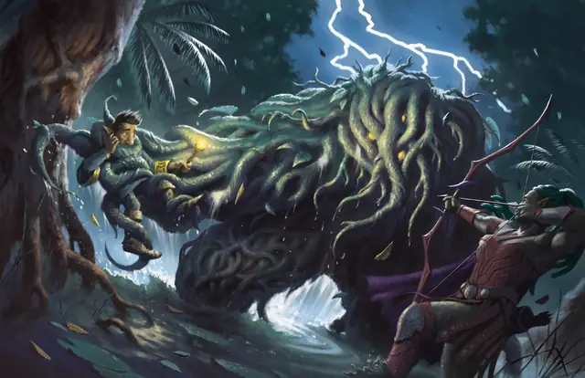

Ползающая насыпь
Shambling Mound
Большое Растение, без мировоззрения

Класс Защиты 15 Инициатива −1 (9)
Хиты 110 (13к10 + 39)
Скорость 30 футов, Плавания 20 футов
| мод | спас | ||
|---|---|---|---|
| СИЛ | 18 | +4 | +4 |
| ЛОВ | 8 | −1 | −1 |
| ТЕЛ | 16 | +3 | +3 |
| мод | спас | ||
|---|---|---|---|
| ИНТ | 5 | −3 | −3 |
| МДР | 10 | +0 | +0 |
| ХАР | 5 | −3 | −3 |
Сопротивление урону Огонь, Холод
Иммунитеты Электричество; Истощение, Оглохший
Чувства пассивное Восприятие 10, Слепое зрение 60 футов
Языки нет
Опасность 5 (1 800 опыта; БВ +3)
Особенности
Поглощение молнии. Каждый раз, когда ползающая насыпь должна получить урон Электричеством, она не получает урон и вместо этого восстанавливает Хиты в количестве, равном наносимому урону Электричеством.
Действия
Мультиатака. Ползающая насыпь совершает три атаки Электризованным отростком. Он может заменить одну из атак использованием Поглощения.
Электризованный отросток. Бросок рукопашной атаки: +7, досягаемость 10 фт. Попадание: 7 (1к6 + 4) Дробящего урона плюс 5 (2к4) урона Электричеством. Если цель — существо Среднего размера или меньше, ползающая насыпь притягивает цель к себе на 5 футов по прямой.
Поглощение. Спасбросок Силы: Сл 15, одно существо Среднего размера или меньше в 5 футах. Провал: Цель притягивается в пространство ползающей насыпи и становится Схваченной (Сл освобождения от захвата 14). Пока длится захват, цель Ослеплена, Опутана и получает 10 (3к6) урона Электричеством в начале каждого своего хода. Когда ползающая насыпь перемещается, Схваченная цель перемещается вместе с ней, не затрачивая дополнительного перемещения. Этим действием ползающая насыпь может держать Схваченным только одно существо за раз.
Бонус мастерства +3
Среда обитания Болота, Леса
Сокровища Отсутствуют
Ползающая насыпь
Воплощение первозданной силы
Ползающие насыпи — также известные просто как «ползуны» — воплощают собой живучесть дикой природы и существуют лишь ради того, чтобы поглощать и расти. Эти скопления растительности возвышаются в полтора человеческих роста и обладают толстыми конечностями и смутным подобием головы. Перемещаясь по болотам и подлеску, они затягивают в себя существ, оказавшихся в пределах досягаемости, и погребают пойманных в своих сплетениях, используя как перегной.
Причудливые обстоятельства способны породить ползающую насыпь, обращая обычную растительность в громадину с зачатками ума. К таким условиям относятся удары магических молний, самозащита природы и друидические проклятия.
Совершите бросок по таблице «Взращения ползающей насыпи» для вдохновения или определите сами её происхождение и отличительные черты.
Взращения ползающей насыпи
| к6 | Ползающая насыпь… |
| 1 | Покрыта яркими чуждыми или фейскими цветами. |
| 2 | Тащит в своём теле менгир, испещрённый рунами. |
| 3 | Кишит паразитами или грибковыми наростами. |
| 4 | Состоит из узловатых лоз, опутывающих скелеты. |
| 5 | Мутировала и сочится светящейся ядовитой жижей. |
| 6 | Представляет собой останки древнего дерева или трента. |